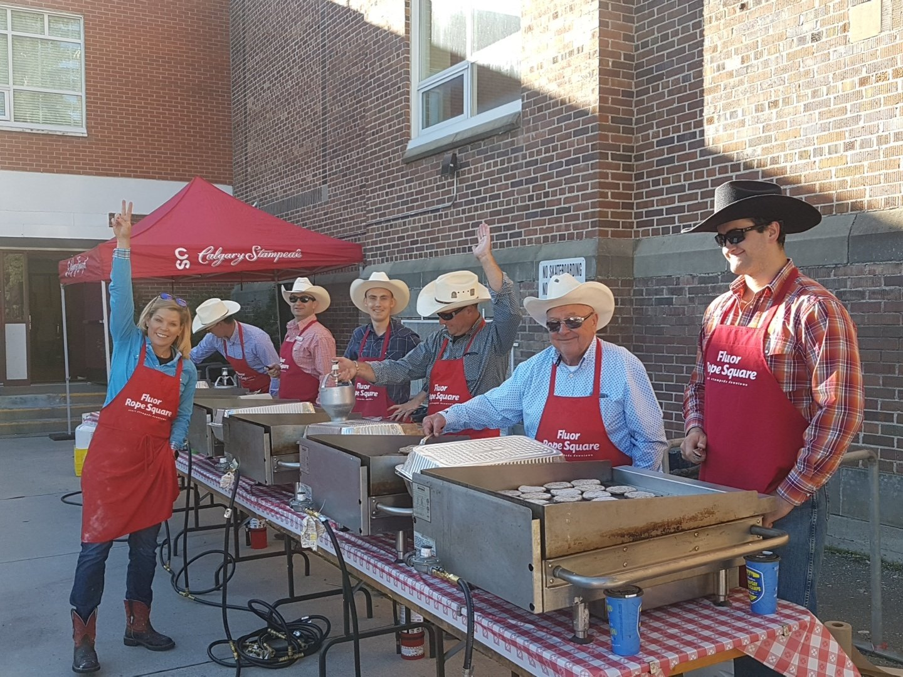
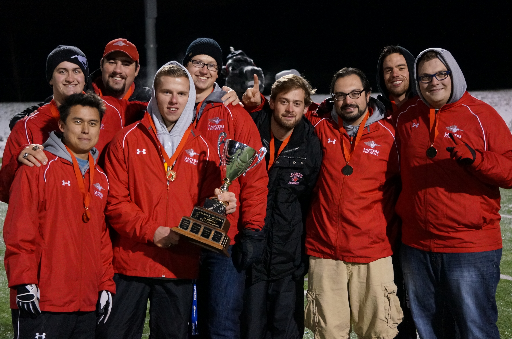

Credit to @dfulford20 on Twitter.
After serving over 30 breakfasts at over 30 elementary schools; working all 5 of the breakfasts during Stampede week, and assisting my committees chair and vice-chair at the warehouse before and after breakfasts, I earned the Above And Beyond Award from the Calgary Stampede Downtown Attractions Committee.
I am a member of the Downtown Attractions Breakfast Committee of the Calgary Stampede. We are a committee of approximately 30 volunteers and are one the few committees that operate year-round. We serve breakfasts for corporations in downtown Calgary so that during the rest of the year, we can take the money we earned cooking those breakfasts and serve a good meal to elementary school children who often might not get a breakfast otherwise.
My time with the Breakfast committee started in the spring of 2017. My father had been a part of the committee for several years and my brother was the current vice-chair of the committee. I had just graduated from the University of Calgary and was happy to volunteer my time again.

Lancer coaching team 2012.
After playing 3 years of football in high school for the Dr. E.P. Scarlett Lancers, I returned to the school the year after graduation to join the coaching staff and help the next generation of players learn to love the game as much as I do.
I began my coaching career as the coach of our junior teams (grade 10 students) offensive line, the position that I had played. Working closely with a small group of 6-8 students allowed me to improve my leadership and coaching skill while still being a key part of the coaching staff. After a successful 3 seasons (2012-2015) of being the offensive line coach, I was made the offensive coordinator and offensive line coach for the juniors. This increase in responsibility required me to further improve my leadership abilities and work closely with a far larger team.
High school had been my first exposure to organized team sports so I knew what it was like to join the team without any idea of who was in charge, where I was supposed to be, and what I was supposed to be doing. This combined with my age allowed me to relate with the players and have a more relaxed attitude, keeping the philosophy that it is more important to have fun playing the sport than just work.